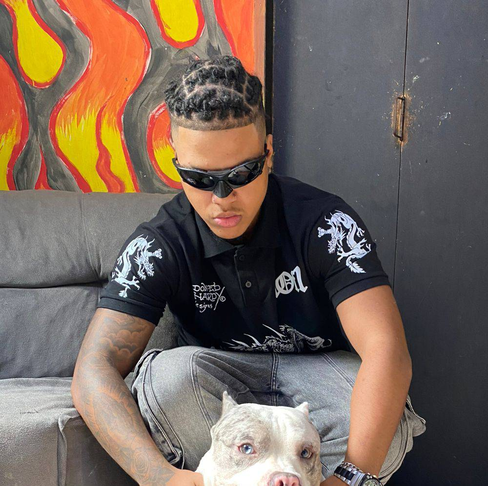

Quem é o Gabriel?
Satisfação sou o Gabriel Lima, mais conhecido como Pretinzkk ou Biel para os proximos, tenho 19 anos, sou filho de uma mãe solteira chamada Ione Sou fundador de um projeto chamado “QG DOS PECINHA” , Modelei para a marca “Aciddrip e 1of1



Sou fundador de um projeto chamado “QG DOS PECINHA”. Tenho uma marca de roupa chamada “BANDO”. Iniciei no mundo musical e estou gravando algumas faixas musicais, faço parte do coletivo “Nova Mafia".

Criativo Ágil em situações difíceis Conhecimento avançado com atendimento ao publico


@pretin_zkk